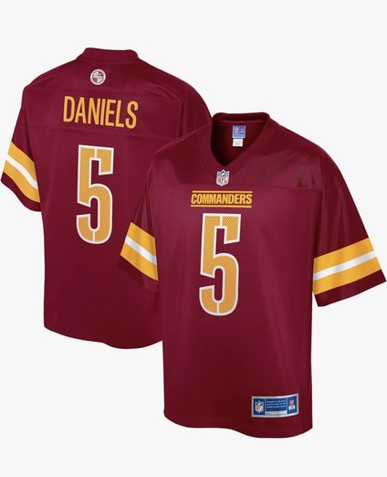
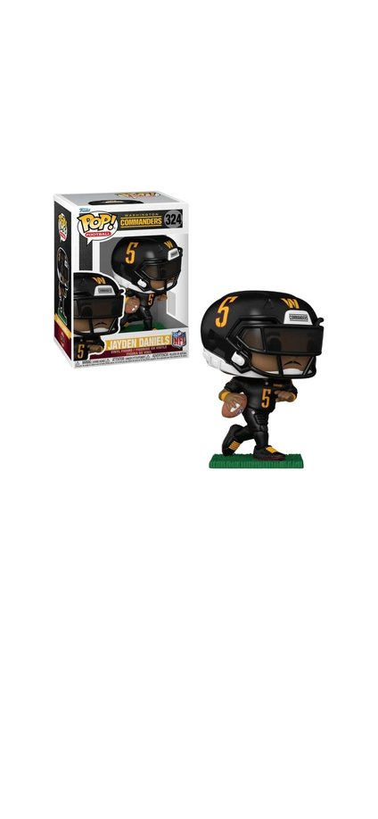
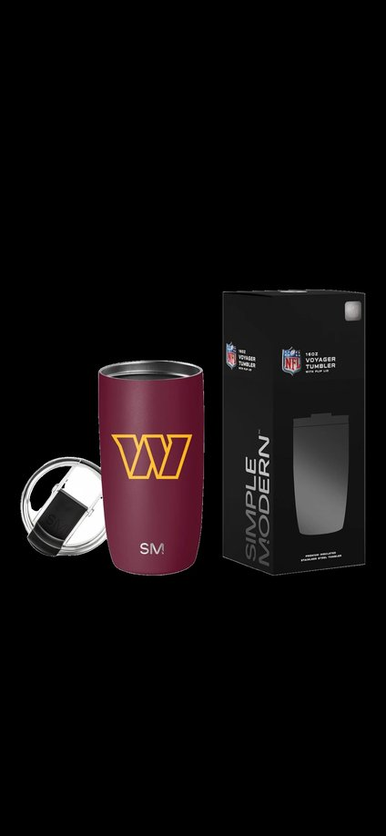
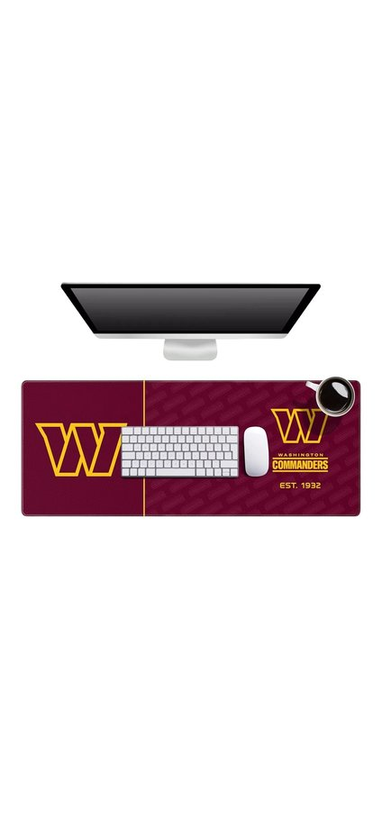
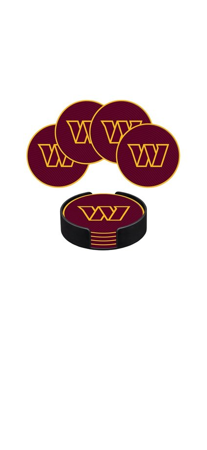

5 Best Gifts for Washington Commanders Fans (2026)
As an Amazon Associate, SHEIN affiliate, and Moosehill (Awin) affiliate, ThatFootball12 earns from qualifying purchases made through links on this site.
Updated October 29, 2026
Shopping for a Commanders fan is harder than it looks. He probably owns a jersey or a hat already, and a lot of gift lists are just more team gear in different colours. These five picks mix the obvious (a jersey) with things he’ll use every day (a tumbler, a desk pad, coasters) and one for the shelf. Each comes with a note on who it suits and the details worth knowing before you order. We checked every listing on amazon.ca on October 29, 2026, so the sizes and specs below match what was there then.
At a glance:
- Jersey: for the die-hard who wears his team on gameday
- Funko Pop: for the collector with a desk or shelf to fill
- Tumbler: for the daily commuter or home-office coffee drinker
- Desk pad: for the work-from-home fan
- Coasters: for the host, or the guy with a favourite chair
1. Jayden Daniels Pro Line Jersey
Looking to get the ultimate Daniels or Commanders fan the right gift? This Pro Line Jayden Daniels jersey is the safe, can’t-miss pick for the die-hard. The burgundy #5 jersey comes in sizes from Small up to 5X-Large. It’s 100% polyester and machine washable, with an NFL patch at the collar and screen-printed graphics rather than stitched ones. The listing calls it officially licensed and says it’s modelled on the jerseys worn on the field, but it doesn’t describe the fit, so check the size chart before you order. It’s sold by a third-party seller, not by Amazon itself.
Best for: the fan who wears his team on gameday.

Men's Jayden Daniels Burgundy Washington Commanders Pro Line Jersey
Shop on AmazonMen's Jayden Daniels Burgundy Washington Commanders Pro Line JerseyDetails2. Jayden Daniels Funko Pop!
If he has a man cave or some team memorabilia at the office, this Funko Pop is an easy add to the shelf. It’s the Jayden Daniels figure in the black uniform (box #324), about 4 inches tall, from Funko’s NFL Pop! line. Funko is a licensed NFL partner, though the listing doesn’t say so itself. This one is sold by a third-party seller and has few reviews, so check the seller and the photos before you order.
Best for: the collector, or anyone with a desk or shelf to fill.

NFL Commanders Jayden Daniels Funko Pop!
Shop on AmazonNFL Commanders Jayden Daniels Funko Pop!Details3. Simple Modern Commanders Tumbler (16oz, flip lid)
An easily transportable gift for the guy who loves coffee as much as his team. It’s a tumbler, not a handled mug: 16 oz of 304 stainless steel with double-wall vacuum insulation for hot or cold drinks, a leak-proof flip lid, and two straws in the box. The listing calls it officially licensed. The lid and straws are dishwasher-safe, but the listing hedges on the tumbler itself, so check its care instructions.
Best for: the daily commuter or the home-office coffee drinker.

Simple Modern Washington Commanders Coffee Mug with Flip Lid | 16oz
Shop on AmazonSimple Modern Washington Commanders Coffee Mug with Flip Lid | 16ozDetails4. YouTheFan Commanders Logo Series Desk Pad
If he’s got a home office and you’re struggling to figure out what to get him, this desk pad makes the space look a lot more put together. It measures 35.4 × 15.7 inches (about 90 × 40 cm), big enough for a keyboard, mouse and laptop. It has a non-slip rubber base, stitched edges, and a water- and stain-resistant top.
Best for: the work-from-home fan.

YouTheFan NFL Washington Commanders Logo Series Desk Pad
Shop on AmazonYouTheFan NFL Washington Commanders Logo Series Desk PadDetails5. Rico Industries Commanders Coaster Set
Ideal for the man who likes to sit out in the sunroom with the game on and a cold one in hand. The set has four round burgundy coasters with the Commanders W, each about 10.8 cm (4¼ inches) across, and they’re hand-wash only. The listing says they’re officially licensed. The main photo shows a holder, but the listing text doesn’t mention one, so don’t count on it being included.
Best for: the host, or the guy with a favourite chair.

Rico Industries NFL Washington Commanders Classic Favorites PVC Coaster Set
Shop on AmazonRico Industries NFL Washington Commanders Classic Favorites PVC Coaster SetDetailsHow to choose
Start with the kind of fan he is. For the die-hard who wears his team on gameday, it’s the jersey. For the collector, it’s the Funko Pop. For the guy who just likes having his team around, the tumbler, desk pad and coasters are things he’ll actually use. If you’re unsure about his size or taste, pick something that needs no sizing: the tumbler, the desk pad or the coasters can’t be the wrong size.
FAQ
Are these officially licensed?
The listings for the jersey, tumbler and coasters say officially licensed. Funko is a licensed NFL partner, but the Funko Pop listing doesn’t say so itself, and the desk pad’s listing refers to its maker’s licensed NFL products without saying it about this item. If it matters to you, check each listing before you buy.
Can I order these in Canada?
All five were listed on amazon.ca when we checked on October 29, 2026. Stock, sizes and delivery times change, so check the delivery options on the listing before you order.
Who sells these?
The tumbler, desk pad and coasters were sold and shipped by Amazon.ca. The jersey and the Funko Pop were sold by third-party sellers. The seller is shown on each listing, and other sellers may offer the same item.
What’s a good gift for a Commanders fan who has everything?
Pick something he’ll use instead of something he’ll wear. Fans tend to have the jersey and hat covered, so an everyday item like the tumbler, the desk pad or the coasters is a safer bet than more apparel.
How do I pick a jersey size?
The jersey is offered from Small to 5X-Large, and the listing gives no fit description. Check the size chart on the listing, and if you’re unsure, compare against a jersey he already owns.